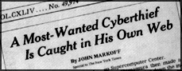
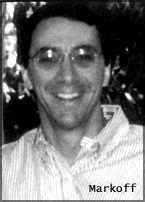
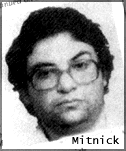
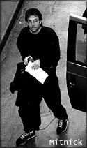
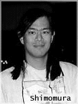
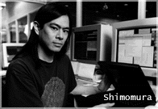

The first, most clearly stated by Shimomura and Markoff themselves in their book Takedown, is that Mitnick was an evil, "dark side" hacker, with unsavory international connections and a bag of tricks that was a threat to the Internet. In this version of events, Mitnick was rightly "taken down" by a superior intellect who was working for the forces of good and the American way.
Another view of the facts is by
journalist Jonathan Littman, the author of the book The Fugitive Game: Online With Kevin Mitnick. In this
book, Littman portrays Mitnick as a victim of circumstance, a convenient fall guy who has been set up by
the government and
whose crimes have been magnified by the press. Indeed, the real bad guy in Littman's book isn't Mitnick,
but Markoff, whom Littman says crossed over the line from covering the story, to becoming part of it.

The third book of the trio is The Cyberthief and the Samurai, by New York journalist Jeff Goodell, and published in
paperback by Dell. Goodell's book grows out of an article that he wrote for Rolling Stone, and its main selling point is
that Goodell has no financial or emotional relationship with any of the story's main characters.
Although he stands to profit handsomely from it, Goodell thinks that the Mitnick story was blown out of proportion
for a variety of reasons. One was timing, says Goodell. "It came at a time when our anxiety about technology was
incredibly high. The world was changing rapidly by this new stuff called the Internet. Few people out there knew what it
was. It was destabalizing a lot of jobs. There was a strong desire to try to latch on to that. I think that a lot of that
anxiety was funneled into Kevin Mitnick."
WHERE DOES THE TRUTH
LIE?
Somewhere in between, no doubt, but probably closer to Goodell's version of events. Internet
Underground's Editor At Large Simson L. Garfinkel has followed this case for more than three months to compile
this handy FAQ format. (For IU's take on the books, see page 76.)
QUESTION: HOW HARD WAS IT REALLY TO BREAK INTO SHIMOMURA'S COMPUTER,
AND WHAT WAS ACTUALLY TAKEN?
ANSWER: "I believe he left his system(s) open intentionally to attract potential attackers -- leaving him with the option of following the attackers or learning from any of the few interesting techniques he might find," says Capt. Kevin J. Ziese, chief of Countermeasures Development with the U.S. Air Force's Information Warfare Center in San Antonio, Texas.
 Although the Christmas Day attack on Shimomura's computer was based on a technique called "IP Spoofing" that had never been seen outside a laboratory environment, the attack would not have succeeded if Shimomura's computers had been protected with some basic computer security systems such as Kerberos, S/Key or SecureID. Two programs were apparently stolen. The first, according to privacy activist John Gilmore, was a new version of the Berkeley Packet Filter for the U.S. military. The new filter was designed to be as stealthy as possible on a UNIX system: Hidden deep in the kernel, it could pick up packets from the 'net and send them to any other computer on the network. This filter could run at an astounding rate of more than 100,000 packets per second; impressive, considering that few networks transmit more than a few dozen packets per second. "This tool is custom-designed for evil," wrote Gilmore on a post to the infamous cypherpunks mailing list.
"Maybe in wartime the Air Force will want to inflict evil on an opponent. Or maybe instead they'll pass it to a latter-day J. Edgar Hoover. Either way, it's evil," Gilmore noted. The second program was software designed to reverse-engineer Shimomura's Oki 900 cellular telephone. The software, co-developed by Shimomura and Bay Area hacker Mark Lottor, could turn a phone into a cellular scanner. By some readings of the Electronic Communications Privacy Act, mere possession of this software is a crime. According to Takedown, Mitnick allegedly wanted the software because he thought he could use it to make a cellular phone that couldn't be traced.
QUESTION: WAS KEVIN MITNICK REALLY ALL THAT DANGEROUS?
ANSWER: It depends on who you are. "Kevin Mitnick was systematically attacking the machines belonging to Internet computer security experts (Dan Framer, Eric Allman, Shimomura etc.) looking for non-public security flaws and sharing them with a loosely connected group of computer outlaws," Markoff wrote me in an e-mail message. "To my mind, he was a public menace who was doing more to damage personal privacy and security in the information age than almost anything I can think of."
 On the other hand, if you weren't a computer security expert or a New York Times reporter, then Mitnick was not such an obvious threat. Yes, it's true that he had a database of 20,000 credit cards. On the other hand, there's no proof that he ever actually used any of them. Furthermore, there's no proof that Mitnick is even the first hacker to swipe them. Emmanuel Goldstein, editor of the hacker quarterly 2600, says that the infamous list of 20,000 credit cards, allegedly stolen from Netcom Communications, had actually been circling around cyberspace for more than a year prior to Mitnick's arrest.
In The Fugitive Game, Littman paints a decidedly more sympathetic view of Mitnick. One reason he did so, we are told, is that he did not rely on Markoff's press accounts of Mitnick's past exploits. Instead, he tried to verify them and in many cases failed. For example, says Littman, there is no evidence to indicate that Mitnick ever broke into the U.S. military's computers at NORAD, the North American Aerospace Defense Command computer, even though this supposed stunt is now reported as truth and was even used as the basis for the movie War Games. Transcripts that are published in Takedown (and available on Shimomura's Web site, http://www.takedown.com/) make it clear that it was a hacker in Israel who was the brains behind Mitnick's attacks. There isn't even any proof that ties Mitnick to the Christmas Day attack on Shimomura's machine. On the other hand, in The Fugitive Game, Littman makes it very clear that Mitnick had detailed, inside knowledge of the attack shortly after it took place. If Mitnick wasn't the perpetrator, he was definitely close to the source.
QUESTION: WHAT'S THIS
ABOUT WWW.TAKEDOWN.COM?
ANSWER: That's Shimomura's Web site, built for the dual purpose of publicizing his book and telling the world his version of the "facts."
Probe further, and you'll learn that Shimomura's Web site gets its network service from Shimomura's erstwhile employer, San Diego Supercomputing Center. Now, you may wonder what a Web site advertising a book (and soon-to-be major motion picture) is doing getting its network service from a federally funded lab. Ann Redelfs, a spokesperson for the lab, says that she doesn't know if Shimomura's use of lab resources for personal gain violates any rules. Neither does the federal government's Inspector General office, although the IG did take an interest in the matter when Internet Underground telephoned asking for an opinion.
 Ironically, Shimomura's Web site has been hacked several times. In February, the site was literally taken down, when a computer hacker submitted a fraudulent domain modification request to Network Solutions Inc., the company that runs the Internet's domain servers. A few weeks later, some hacker broke into the site of the noted security expert and changed the computer's mailer banner so that it read: 220 www4.takedown.com ESMTP Sendwhale 8.7.3/Takedown-1 [KDM was here] ready at Thu, 15 Feb 1996 18:25:13 -0800 (PST) So much for computer security, eh?
QUESTION: WHY DIDN'T SHIMOMURA
CALL HIS BOOK CATCHING KEVIN, AS
WAS ORIGINALLY PLANNED?
ANSWER: Perhaps because that title would have been a little too close to the truth. According to Goodell, Shimomura and Markoff had actually considered putting together a trap for Mitnick in October 1994, two months before the Christmas Day break-in. "Shimomura and [SDSC's network manager] had planned a Cuckoo's Egg kind of sting," says Goodell, referring to Cliff Stoll's best-selling book. "They were going to do the same thing. They even contacted Kathleen Cunningham at the U.S. Marshall's Office and offered their help."
QUESTION: DID MARKOFF BREAK THE LAW?
ANSWER: Eric Corley thinks so. In the attention-grabbing opening scene of Takedown, Shimomura, Markoff and a Sprint Cellular engineer sit in a van with listening equipment, homing in on the elusive Mitnick by tracing the signals from his cellular telephone, listening to Mitnick's calls in the process. Nearly 300 pages later, when the scene is repeated, Shimomura quotes Markoff as saying, "I recognize that voice! That's Eric Corley!"
Corley, better known as Emmanuel Goldstein, is the editor of the quarterly hacker magazine 2600. He's upset that Markoff and Shimomura listened in on his conversation -- and angry that the conversation itself is reported in their book. "I feel that they violated my privacy," says Corley. Corley is no fan of the Electronic Communications Privacy Act, the law which prohibits the tapping of cellular telephone calls. Nevertheless, he says, the law specifically forbids tapping people without a warrant and the public release of information obtained from a wiretap.
Now, it turns out that the FBI had a wiretap order for Mitnick. But did that order cover Markoff? That depends on whether Markoff was sitting in the van as a "Kevin expert," working on behalf of the FBI, or whether he was there as a reporter for The New York Times. "To the best of my knowledge, John Markoff did not do anything illegal. His role in the investigation was as a source of information about Kevin Mitnick," says John Ken Walker, Jr., a former Assistant U.S. Attorney who worked on the case.
 But Markoff demurs. "I was in the truck as a New York Times reporter and I had identified myself as such," says Markoff, who adds that the ECPA did not apply to the Mitnick/Corley conversation, because Mitnick was using stolen codes. "The phone call was a fraudulent call being made with a stolen cellular phone number. As such it wasn't protected," says Markoff.
Caught somewhere in the middle of all of this is Sprint Cellular. "I did speak with one of the technicians and the technician's supervisor," says Sal Cinquegrani, a spokesperson for Sprint Cellular. "We did receive the court order. We were told we were to meet a computer expert. That turned out to be Shimomura. Later some of the local FBI agents met [Sprint's technicians at] the mobile switching center. Subsequent to that is when Mr. Markoff appeared on the scene. Because there was a lot of interaction between Shimomura and Markoff and others, the assumption was that they all knew each other and worked together. Afterward we learned that he was a reporter. We learned it at the same time that the agents did. The agents requested that Mr. Markoff leave because they were getting into some sensitive areas of the investigation, and Mr. Markoff did in fact leave."
Markoff has taken a lot of flak in the press for his back-seat view of the chase and capture. The truth, though, is that there isn't a journalist alive who wouldn't have gladly traded places with him. Anybody who says otherwise just has a bad case of sour grapes.
QUESTION: WHAT ABOUT
THAT $750,000 BOOK ADVANCE? SINCE WHEN DO NEW YORK TIMES REPORTERS
MAKE BUSINESS DEALS WITH THEIR SOURCES? ISN'T THAT A CONFLICT-OF-INTEREST?
ANSWER: According to The Times, Markoff didn't have any ethical lapses because he took a leave of absence from The Times to write the book with Shimomura.
 "As for our conflict-of-interest policy, John Markoff followed the necessary requirements of the policy and received prior permission from The Times before he signed a contract to write a book," says Nancy Nielsen, vice president for Corporate Communications of The New York Times Company.
One of the reasons that Markoff's journalistic ethics have been subject to such scrutiny is that he, Shimomura and The New York Times itself have done such a poor job responding to the criticism. For example, although Nielsen says that Markoff followed The Times' conflict-of-interest policy, she and her office refused more than seven formal requests to provide a copy of that policy to Internet Underground. Markoff has said on numerous occasions that his "editors" approved of his writing Takedown. How does that look when it is revealed that Markoff's editor, Tim Race, was flown to San Francisco during the summer of 1995 and compensated for his role in editing the Takedown manuscript? (Only upon further questioning does one learn that the project was approved not by Race, but by a Times assistant managing editor.)
Markoff, meanwhile, questions why everyone is ignoring Littman's supposed ethical lapse: not telling The Well that it was the subject of a break-in, when Littman knew that Mitnick was running wild on the Internet service. In The Fugitive Game, Littman does say that he called The Well and told them that a hacker had broken in but the person that he spoke to refused to believe the report.
…Tsutomu Shimomura and Tim Race declined to be interviewed for this article.